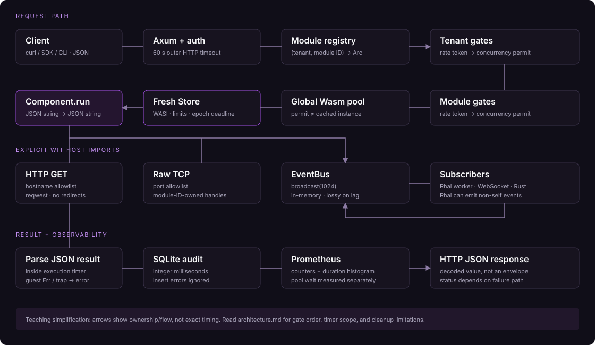

Architecture: follow a request to the source
This is a source-level description of commit 20cb378, not an aspirational design document. The interactive request lab simplifies timing for teaching; the sequence below describes the actual code.
System overview #

Repository boundaries #
The Cargo workspace has five members:
orchestrator: library plus thinmain.rsbinary.shared-types: serializable manifest, capability, and quota types.sample-plugin: acdylibguest; excluded from default workspace builds.wraith-sdk: HTTP client, not an embedding of Wasmtime.wraith-cli: Clap interface over the SDK.
WraithOS is outside the Cargo workspace. It packages a separately cross-compiled orchestrator into Buildroot filesystem overlays.
Startup sequence #
orchestrator/src/main.rs performs the following, in order:
- Parse CLI flags. Load TOML if the selected file exists; otherwise use Rust defaults. Apply CLI overrides for module directory and logging.
- Initialize tracing.
RUST_LOGtakes precedence over the configured log filter.--dry-runexits here. - Warn if global Wasm concurrency is at least available CPU parallelism.
- Install the Prometheus recorder and build a shared Wasmtime engine with component-model and epoch interruption enabled.
- Start a native epoch ticker thread: one tick every 100 ms.
- Build
AppContext: install the ring TLS provider, construct reqwest, open SQLite with WAL, create the audit table, and allocate socket/Wasm registries. - Migrate recognized flat module files into
modules/default/; existing destinations are not overwritten. The destination is literallydefault, even ifdefault_tenanthas another name. - If global authentication is required, verify that the default tenant has a token configured.
- Resolve Cargo home; if source builds are enabled, require
bwrap --versionto succeed. - Construct the tenant registry, validate Argon2 PHC syntax, and load module directories/components/sidecars/signatures.
- Construct wizard state and the shared
ApiState; bind the HTTP listener ifmetrics_bindis nonempty. - Compile the Rhai AST, subscribe its worker, start a Rust logging subscriber, and publish one
scan.completedsmoke event. - Wait for SIGINT/SIGTERM on Unix, then run shutdown cleanup.
There is no startup execution of every module. The old probe was removed to avoid unintended guest side effects.
Shared state and ownership #
AppContext is shared through Arc and owns:
| Field | Purpose | Lifetime |
|---|---|---|
http |
Reqwest client with rustls/ring, webpki roots, no redirects | Process |
db |
SQLx SQLite pool | Process; explicitly closed at shutdown |
sockets |
Global bounded map of TCP streams | Until closed/released; not automatically scoped to a Store |
wasm_pool |
Global semaphore and in-flight gauge | Process |
capabilities |
Global fallback policy | Process |
event_bus |
Broadcast sender | Process |
config |
Effective host resource settings | Process |
A WasmModule owns a manifest, shared engine, compiled Component, Linker<WasmHostState>, quota state, and capability set. It does not own a permanently running guest instance.
The execution path in detail #
1. Routing and authentication #
The single Axum router serves health, metrics, debug state, module lifecycle, UI, WebSocket, wizard, and optionally source builds. A 60-second TimeoutLayer wraps the router.
If require_auth=true, middleware exempts only exact /healthz and /readyz paths and verifies the default tenant's Bearer token. Module handlers then perform tenant-specific verification again. This is not an RBAC system; read authentication semantics.
Module routes parse JSON before the execution handler runs. The module router applies a 10 MiB body limit. Uploads are raw bytes, not multipart forms.
2. Lookup and tenant gates #
The registry key is (tenant, id). A missing module produces 404. Execution then:
- Consumes a tenant rate token, if configured.
- Acquires a tenant concurrency permit, if configured, with
wasm_acquire_timeout_secsas the wait limit.
The returned permit is RAII-owned: dropping it releases capacity and updates the tenant gauge.
3. Module gates #
WasmModule::execute_quota consumes a module rate token and then acquires a module concurrency permit. Zero-valued quota fields mean no extra gate at this layer.
Rate-limit rejection is immediate. Concurrency rejection waits up to the configured timeout. These branches update rejection metrics; early tenant rejections do not create execution audit rows.
4. Global pool #
WasmPool::acquire waits for one of max_concurrent_wasm permits. The wait is measured separately as wasm_pool_wait_seconds. On timeout it returns a capability-denied library error, which the HTTP layer currently maps through the internal-error path to 500.
Permits are not pre-created Wasm instances. A permit only authorizes work.
5. Fresh Store and host state #
For every accepted execution, execute_impl:
- Chooses the module memory cap, falling back to the global cap when the module value is zero.
- Creates a new
Store<WasmHostState>. - Sets an epoch deadline of 600 ticks, approximately 60 seconds at the configured 100 ms tick interval.
- Installs
StoreLimitswithmemory_sizeandtrap_on_grow_failure(true). - Creates a fresh WASI context and resource table, inheriting standard I/O but not adding arbitrary filesystem preopens.
- Instantiates the component asynchronously using the compiled component and linker.
This explains why the benchmark explicitly includes Store creation and instantiation. There is no persistent Wasm instance pool.
6. Payload, guest call, and result #
The conversion is deliberately string-based:
HTTP JSON value
→ serde_json::to_string
→ WIT run(payload: string)
→ guest Result<String, String>
→ serde_json::from_str
→ HTTP JSON valueBoth sides must honor the JSON convention. Returning arbitrary text such as hello is a valid WIT string but fails host JSON parsing. Returning Ok("\"hello\"") would produce a JSON string response.
A guest Err, trap, instantiation failure, or invalid output JSON becomes an execution error. A host-import error is not necessarily an execution error if the guest catches it and returns valid JSON, as the sample does.
7. Audit and metrics #
After execute_impl completes, the host:
- Records success/error counters.
- Inserts an audit row with integer milliseconds and an optional error string.
- Records execution duration in seconds as a floating-point histogram observation.
The execution timer starts immediately before execute_impl and stops before the audit insert and execution-histogram recording. It includes payload serialization and result parsing. It excludes lookup, rate/concurrency acquisition, global-pool waiting, HTTP parsing, and audit writes.
The audit insert ignores its own Result: a database write failure does not currently turn a successful guest execution into an HTTP failure. Plan independent database monitoring and backup verification.
WIT host bridges #
The complete contract is in orchestrator/wit/host-capabilities.wit.
HTTP #
http.get(url) parses the URL, checks the host against exact, wildcard-subdomain, or * matchers, and sends a GET through the shared reqwest client. Non-2xx responses become guest-visible errors. Redirect following is disabled.
The matcher checks the hostname, not the scheme, port, resolved IP, or response size. The overall reqwest timeout defaults to 30 seconds. An allowlisted hostname that resolves to a private address can still create SSRF exposure.
TCP #
tcp.connect(host, port) checks the configured port list, opens a Tokio TCP stream, enables TCP_NODELAY on a best-effort basis, and stores it in the global socket registry. read, write, and close use the returned handle.
The current owner string is the module ID, not (tenant, module ID). Socket handles are not automatically removed when a Store is dropped. Guests should close their handles; the implementation needs stronger execution/tenant scoping for untrusted multi-tenant use.
CapabilitySet contains a TCP-host matcher field, but the shared TcpConnect type and config expose only ports, so that field is not populated through the current public configuration path.
Events #
events.emit(kind, payload_json) checks event-kind permission and parses the payload before publishing:
{
"kind": "sample.emitted",
"payload": {},
"source_module": "sample"
}The bus is a Tokio broadcast channel with capacity 1024 in the main binary. It is in-memory, lossy for lagging receivers, and has no durable replay or tenant partition. A slow WebSocket client or Rhai worker can miss events.
Rhai event processing #
The worker compiles the configured script once. For each non-Rhai event it:
- Serializes the payload to a string.
- Creates a fresh Rhai engine inside
spawn_blocking. - Exposes
event_kind,event_payload,log_info, andemit_event. - Runs the shared AST.
- Drains emitted events and publishes them with source
rhai. - Skips source
rhaion receipt to prevent immediate self-feedback.
Only log_info is gated by the global log capability. Rhai emission is not checked against the Wasm event-kind allowlist. The script is operator-provided trusted code; the current engine has no explicit operation/memory budget or cancellation deadline. spawn_blocking moves CPU work off an async worker but is not a security sandbox.
Registry and disk persistence #
A successful raw upload writes:
modules/<tenant>/<id>.wasm
modules/<tenant>/<id>.wasm.quota.json
modules/<tenant>/<id>.wasm.capabilities.jsonatomic_write creates a sibling temporary file, writes, fsyncs, renames, and attempts directory fsync. This makes an individual file replacement atomic; it does not make the three-file commit plus in-memory registry update a single transaction.
On startup, directories become tenant names and filename stems become module IDs. Invalid components or signatures are skipped. Missing/invalid sidecars fall back to defaults. An empty capability manifest uses global capabilities at runtime; this means an explicitly empty upload manifest is not a durable deny-all policy.
Hot replacement swaps the registry Arc. An execution already holding the previous module finishes against that old object. Delete removes the registry entry and attempts to remove Wasm/quota files, but does not currently remove the capabilities sidecar or signature sibling.
Build pipeline #
When explicitly enabled, /modules/build accepts a tar or gzip tar with Cargo.toml at the archive root. It extracts into a temporary directory, parses the package name, and runs release compilation for wasm32-wasip2 through Bubblewrap. A global semaphore permits one build at a time. Cargo has a 300-second timeout; tar write/wait phases have separate 30-second limits.
The sandbox unshares namespaces, binds system/toolchain paths read-only, makes the source directory writable, and uses tmpfs for home/tmp. Network is shared only when explicitly enabled. Offline mode requires dependencies already available in the read-only Cargo cache.
The outer HTTP timeout remains 60 seconds: a long build can outlive the client's HTTP response. Build success does not currently verify/persist a module signature or persist a capabilities sidecar. Treat this as trusted-operator functionality, not an audited public compiler service.
Health and observability #
/healthz: liveness only./readyz:SELECT 1plus at least one available global Wasm permit; zero loaded modules is acceptable./debug/state: global module/pool/socket snapshot, not tenant-filtered./metrics: Prometheus recorder output; process-local counters reset on restart./audit/logs: latest 50 rows across all tenants; no pagination in the current API.
Shutdown #
On SIGINT/SIGTERM, main signals the Rhai worker, drops its local bus clone, awaits workers, stops the HTTP listener, and closes SQLite. Axum graceful shutdown and SQLx pool closing can wait for work/connection release.
There are cleanup gaps: the Rust event subscriber has no independent stop signal while other bus senders remain alive, TCP streams are not explicitly execution-scoped, and the outer service manager may enforce a shorter deadline. Test shutdown under realistic load rather than assuming every in-flight request drains within a fixed time.
Design trade-offs for senior readers #
- Fresh Store per call: simple state isolation and predictable lifecycle, at the cost of instantiation overhead.
- Shared Engine/Component: reuse compilation-related host structures without reusing guest linear memory.
- Semaphore before instantiation: bound expensive work rather than discovering resource pressure after allocation.
- Async host imports + synchronous Rhai offload: different execution models connected by an event contract.
- Single-process tenancy: low operational overhead, but not a hostile-tenant security boundary.
- Filesystem + SQLite rather than a control-plane database: easy self-hosting, with explicit multi-file consistency and backup limitations.
Continue with Security for the threat model and Source map for file-by-file navigation.